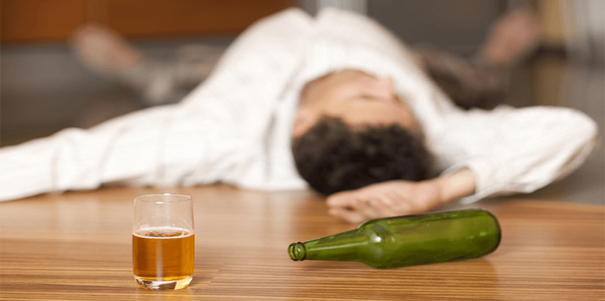

Ich rettete meinem Mann vor Trunksucht für einen Monat
Sehr gerechter Brief unserer Leserin.
Alle Materialien sind anonym veröffentlicht! Hochachtungsvoll, Administratoren der Webseite “Volksheilmittel””
Meine Lebensgeschichte ist davon, wie ich von meinem Mann-Trinker unabhängig wurde. Diese Geschichte ist nicht über Ehescheidung. Ich erzähle, wie ich meine Familie vor schrecklicher Verdammung gerettet habe.
Er hat alles versoffen!
Wie bei allen, tückische Krankheit erweiterte sich langsam, nicht gleich. 15 sind wir verheiratet. Vor 7 Jahren stellte ich selbst meinem Mann Diagnose - Alkoholiker.. Immer mehr Alkohol, immer weniger mein Liebling. Alkoholismus hat seine Seele, sein Körper, sein Sinn fast gefressen. Wodka hat meine Familie fast zerstören.
Zu jedem Zeitpunkt konnte er das Geld verhauen, das für Erholung oder Kleidung für den Sohn zurückgelegt war. Ich verbarg alles, was ich verdiente. Aber er fand es sowieso und vertrank. Auf seiner Arbeit bedrohte man ständig ihn zu entlassen. Vor 2 Jahre hat man ihn wirklich entlassen. Er versprach, dass er eine andere Arbeit findet. Ich hoffte, ich glaubte, dass «alles bald in Ordnung kommt und wieder gut wird, wie früher, vor der Hochzeit…». Morgens ging er weg um die Arbeit zu suchen und abends kehrte er mit gescheiterten Hoffnungen zurück und unbedingt betrunken.
Mit betrunkenem zu reden — das heißt sich selbst in die Seele spucken.
Ich zog meinem Mann aus dem abermaligen Sauftour heraus, ich zog seinen toten Körper nach Hause, zu Hause schimpfte ich ihn, sprach sein Gewissen an. Morgens gab ich ihn Lake trinken. Ich sperrte ihn zu Hause, damit er sich nicht voll saufen konnte. Ich bedauere, aber manchmal kaufte ich selbst Wodka. Damit er lächelte. Ohne Alkohol war er beinahe tot. Nach 2 Jahren solches Lebens verstand ich, ich kann nicht mehr so!
Ehescheidung?
Ich gab mich auf. Ständige Schimpferei, seine betrunkene Fratze sind zum Tode geritten! Ich fasste den Beschluss, dass wir mit meinem Sohn ohne diesen gefallenen Mensch, der uns bestehlt, besser leben werden.
Aber ich erinnere mich an die Zeiten, wann er aufmerksam, arbeitslustig war. Er verhimmelte mich, Stefan. Tod seines Mutters hat ihn so niedergeschlagen. Vielleich bin ich auch schuldig, ich konnte nicht ihn rechtzeitig unterstützen. Aber ich habe es während 7 Jahre geduldet, ich schleppte ihn! Da platzt mir der Kragen! Ich habe die Scheidung beantragt.
Nüchterne Aufsicht
Als ich ihn den Antrag zeigte, war er geschockt. Er verstand, dass sein Leben zusammenbrach. Ich sagte, dass ich Stefan mitnehme und zu meiner Mutter fahre. Und dann begann es! Er fiel auf die Knien, beschwor, entschuldigte sich! Er beschwor, dass er trocken wird und nie wieder trinken wird. Solche Fassungslosigkeit habe ich nie in seinen Augen gesehen. Verzeiht! Vertraut! Während 2 Wochen trank er nicht. Dann war Geburtstag seines Bruders. Und dann begann alles von Anfang an…
Aber diese 2 Wochen kehrten mir die Liebe und Hoffnung zurück. Ich verstand wie sehr ich meinen Mann liebe, so guter Vater er ist, wenn er nüchtern ist. Im Bett ist bei uns auch alles gut. Und ich wollte alles Mögliches machen, und wenn es mir nicht gelingt, dann die Scheidung.
Ausheilung
Ich brauchte solches Mittel, das wirklich hilft.. Für diese Jahre versuchte ich verschiedene Mittel. Aus Schaden wird man klug, und ich stellte meine Forderungen zur Ausheilung zusammen:
1. Ohne Kodierung (Vor 5 Jahren machten wir Kodierung – da machte ich bloß noch einen Scharlatan reicher. Mein Mann hielt 3 Monate durch und trank er zehnfach stärker)
2. ohne sein Wissen, damit er nichts verdächtigte (Ich versuchte Tabletten gegen Alkoholismus — mein Mann sagte ab sie zu trinken, machte Skandal. Ich verkrümelte und schüttete in die Suppe an, er spürte den Geschmack auf, zerbrach den Teller, beinahe hat er mich geschlagen. Deshalb suchte ich nämlich GESCHMACKLOSE Tropfen!))
3. Sicher (Ich habe Angst vor schwarzer Magie, Sprüchen. Ich bin sicher, dass die Menschenseele sich verändert , Wille niedergedrückt wird. Ich besuchte nie Galsterweiber und empfehle es nicht)
Ich suchte es im Internet, lies viel, beratschlägte mich mit meinen Freundinnen. Endlich fand ich das nötige Mittel. Europäisch, 100% natürlich, ärztlich genehmigt. Sonderkräuter in der Zusammensetzung. Regenerieren Leber, Lungen, Magen usw. Und das wichtigste – sie rufen ständigen Ekel zum Alkohol hervor.. Ich wollte riskieren. Und ich begann ins Essen 10 Tropfen 3 mal pro Tag hinzuzugießen. Sie haben keinen Geruch, Geschmack und Farbe. Genau das Richtige!
Erster Effekt erschah auf 4 Tag. Nach dem Essen goß mein Mann sich ein Gläschen und zog ein schiefes Gesicht. Früher sah ich Glückseligkeit auf sein Gesicht, und jetzt ging ihm Wodka nicht an! Er lief aufs Klo, kotzte dort...
Ich werde nicht erzählen, über seine “ Entzugserscheinungen ” nach jedem Versuch zu Trinken. Er verstand nicht, warum tut ihm Alkohol nicht wohl, umgekehrt - weh. Er kotzte nach jeden Schluck. Kopfschmerzen hatte er auch. Wie beim schrecklichen Kater. Nach dem Saufabend kam er früh nach Hause und ging gleich ins Bett. Er erzählte mir nichts. Und ich sah, dass man ihm telefoniert, lädt zu “bechern” ein, und er geht nicht.
So war es während eines Monats. Auf Stefans Geburtstag hatten wir Gäste. Alle trinken, mein Mann trinkt nicht.. Er sieht auf Gläschen, und hat Angst in den Augen. Er hat allen gesagt, dass er sich zwischenzeitlich auf Alkohol verzichtete. Aber ich wusste, das es für immer ist. Aber in der Nach im Bett fragte ich ihn. Warum hast du heute nicht getrunken? Zuerst schwieg er und dann sagte: Schluss damit. Gesundheit ist aus. Und da schlief er ein.
Ein Jahr ohne Wodka
Ich bin unaussprechlich. Nach der Hölle, die wir durchgestanden haben, - leben wir jetzt beinahe im Paradies. Er trinkt nicht, hat eine gute Arbeit bekommen. Wir haben die Renovierung durchgeführt, alles ist neu im Haus, Möbel, Küche. Mein Mann führt den Sohn in eine Sektion, verbringt viel Zeit mit der Familie. Seine Augen strahlen. Er erinnert sich sogar nicht über Wodka und fröhliche Ründe. So ist meine Geschichte. Wenn sie in der Familie einen Alkoholiker haben, versuchen Sie die Mittel, das mir geholfen hat. Auf dieser Seite Lesen Sie ausführlicher. Ich wünsche Ihnen eine gute Familie! Verlieren Sie nie die Hoffnung!
Paul Böhmer
Ich meinte immer, dass die Pharmakologie besser ist. Aber da ging ich selbst in die Klinik. Unendliche Analysen, hierhin und dorthin, ich zerwehte bloß das Geld ohne Sinn und Zweck. Wozu??? Irgendeine unbegabten Psychologen, nutzlose ausländische Tabletten. Dann sowieso kamen wir zum Ergebnis, dass ich mich kodieren lassen soll. Ich zerrte mir meine Nerven, vom Alkohol verzichtete ich sowieso nicht. Jetzt erlerne ich Volksheilmittel. Ich will sehr mich aufs Gift verzichten, das mir eine Halbe meines Lebens verdorben hat. Danke für die Ratschläge. Ich nutze es vielleicht aus.
Madelein Rosental
Für die Gesundheit sind natürlich die Kräuter besser. Die Hauptsache ist, dass es sicher ist! Ich verstehe, was Sie erzählen, ich goß auch meiner Mutter Tropfen hinzu. Es wurde ihr schlecht natürlich. Ich hatte Angst. Aber der Wunsch sie auszuheilen war stärker. Ich bin froh, dass meine Mutter sich weiter mit diesen Tropfen heilt, und jetzt trinkt sie schon während zwei Jahren nicht!
Stolz Karsten
Ich heilte meinen Großvater von der Abhängigkeit, nach 30 Jahren der Trunksucht, es gelang mir mehr oder weniger. Misserfolge waren, aber sehr selten. Jetzt trinkt er schon 7, 5 Jahre nicht. Toi, toi, toi!
Gott bewahre uns vor dieser Abhängigkeit!
Matilde Hoffmann
Danke für ihre Geschichte und Aufrichtigkeit. Ich verstehe Sie gut, ich habe auch eine ähnliche Geschichte. Mein Mann ist Schluckspecht. Kleiner Sohn. Danke für die Rezeptur! Wir versuchen es natürlich!!!
Barbara Jonson
Als wäre es die Geschichte meines Lebens, aber wir hatten damals keine Kinder. Wir haben uns auch mit dieser Kräuterzusammensetzung geheilt. Es hat sehr gut geholfen. Er hörte auf auf Sauftour zu gehen. Jetzt trinkt er sehr selten, an Feiertagen. Er kontrollliert sich selbst, und ich habe schon keine Angst für ihn. Wir haben eine Tochter und einen Sohn. Viel Erfolg! Diese Rezeptur funktioniert!
Leah Gödl
Danke für die Ratschläge. Ich kann nicht glauben, das es helfen wird…..wir haben alles versucht. Ich habe schon
die Hoffnung verloren….aber vielleicht…. die Hoffnung stirbt zuletzt
Lora Schneider
Versuchen Sie mit dem Gebet. Tropfen Sie die Tropfen und lesen Sie das Gebet ans Wasser. Vater unser im Himmel passt oder an Bartholomäus. Das hilft ja!